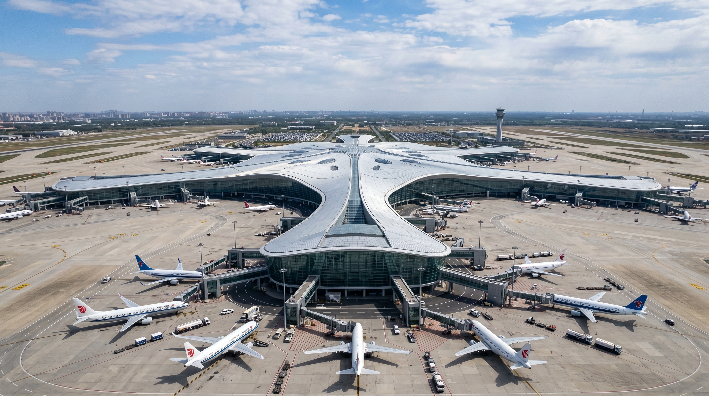
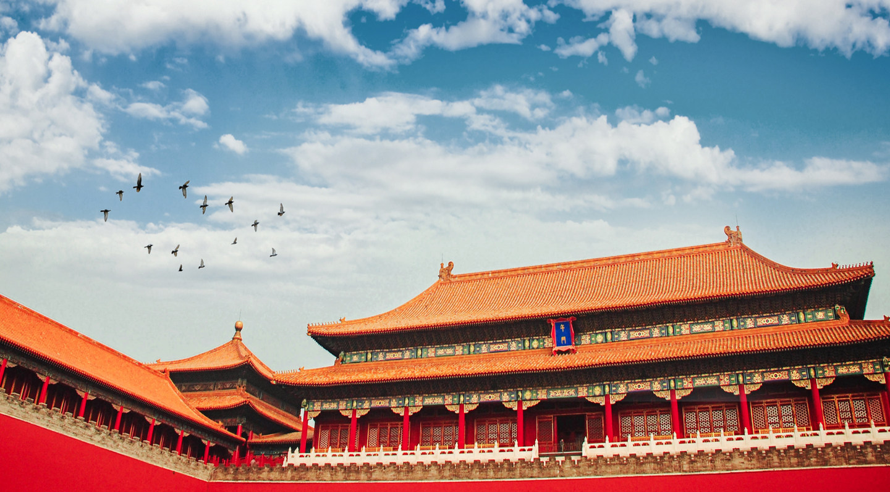
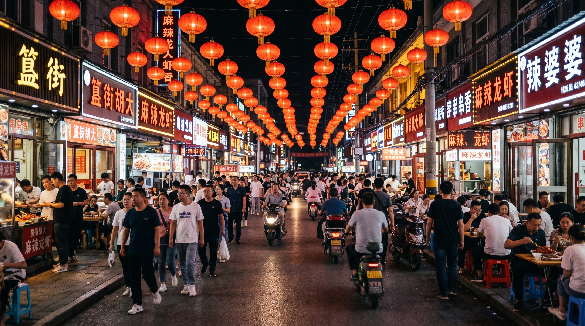
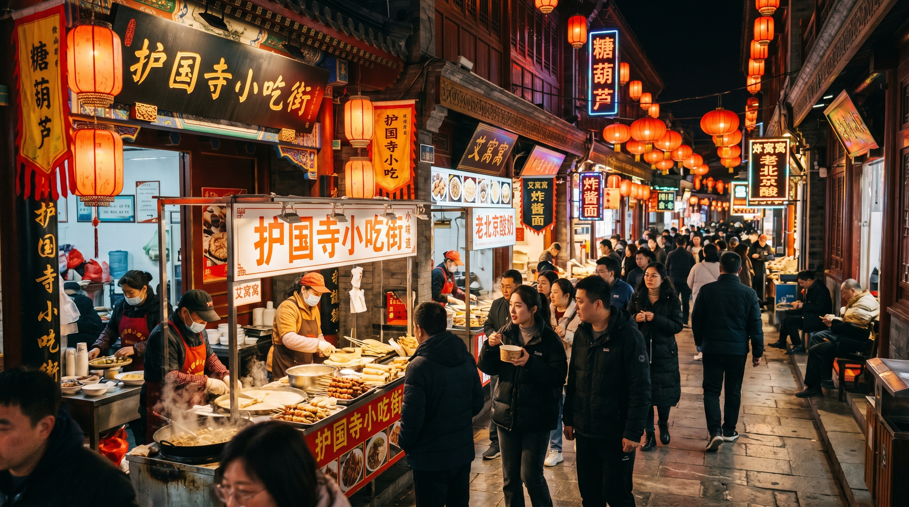
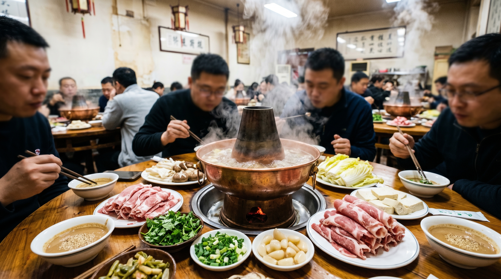
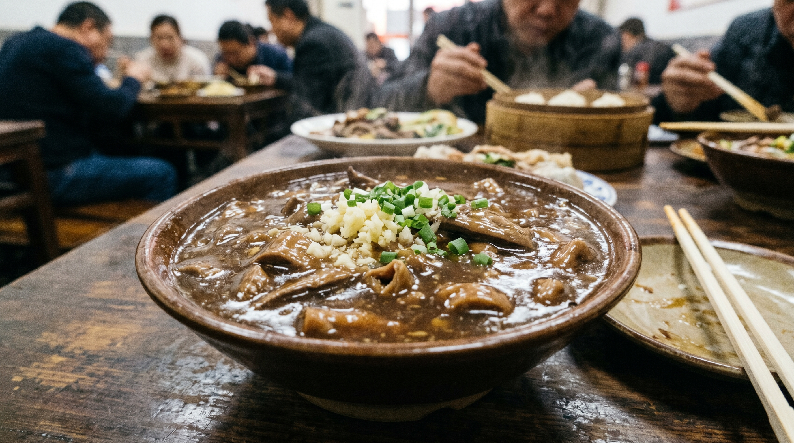

Fulfill your parents’ dream of visiting Tiananmen Square in the capital city. You should take your
parents to Beijing to see the solemnity of Tiananmen Square, which is the dream of all the older
generations.
The core of traveling with parents is "companionship" and their comfort and happiness. This unique
Beijing
trip integrates culture, leisure, food and experiences, hoping to bring families a wonderful and
unforgettable memory in the capital. The whole journey is fun and meaningful, entertaining and
educational! Please save this Beijing family travel guide! If it is your first time to Beijing, you
can really save this. It includes attractions, accommodation, food, transportation, outfits, and
scam avoidance tips. I dare not say it can avoid 100% of troubles, but it can definitely save you
80% to 90% of troubles. I hope everyone can have a great time in Beijing.
Immersive Experience: Be a Local Beijinger
Let parents be not just "visitors" but "participants".
Take a tricycle ride in old hutongs: Find a talkative rickshaw driver to travel through the hutongs around Shichahai. Listen to stories about old Beijing gate piers and courtyard houses, pass by former residences of celebrities, and feel the atmosphere of daily life. You can have a cup of tea by the Houhai lake and enjoy the willow branches.
Learn to make imperial dishes or Beijing snacks: Book cultural experience classes, such as making imperial snacks (pea cake, lu dagun) or Beijing fried sauce noodles. Under the guidance of teachers, parents can make food by themselves, which is fun and a unique travel souvenir.
Boat or walk in beautiful lakes and mountains: Beihai Park is the origin of the song "Let Us Swing Our Oars". Accompany parents to boat under the white pagoda and recall the melodies of their youth. Summer Palace: you don’t have to walk the whole park. Focus on boating on Kunming Lake to view Wanshou Mountain and Foxiang Pavilion from the water, which is easy and perfect for photos. Or walk on the West Causeway, the scenery is comparable to Jiangnan.
Recommended Travel Methods in Beijing
1. Self-guided Tour or Self-driving
Self-guided tours or self-driving trips have high freedom but many trivial tasks. You have to book hotels, tickets, and cars by yourself. Especially after Beijing and the Forbidden City became popular, tourism resources are tight. Booking hotels and cars by yourself is not only expensive but also often hard to find rooms. The key point is that foreign vehicles are restricted in downtown Beijing and cannot enter, so the experience is not good. Rating: ★★
2. High-end Quality Tour
Highly recommend high-end quality tours. Rating: ★★★★★. The choice of 90% of tourists. We contacted a local top-rated guide in Beijing in advance, who can customize the travel route. The guide will arrange pick-up, tickets, transportation, hotels, and food properly. Our guide has rich experience and resources. The 5-day 4-night trip costs only about 1,000 yuan per person, which is worry-free and cost-effective.
9 Must-Visit Attractions for Parents
Forbidden City: Symbol of Ming and Qing imperial power, the most important place in their generation’s hearts.
Tiananmen Square: Symbol of China. Watching the flag-raising ceremony is a long-cherished wish for many parents.
Summer Palace: The top of Chinese classical gardens, beautiful landscapes and smooth paths, very suitable for walking.
Temple of Heaven: Exquisite and unique architecture, where Ming and Qing emperors worshipped heaven, with beautiful meanings.
Shichahai Area: Has lakes, hutongs, former residences, and food, with great comprehensive experience.
Qianmen Street: Gathering time-honored brands, one-stop shopping and dining.
Olympic Park: Symbol of the 2008 Olympic Games, a symbol of modern Beijing.
Badaling Great Wall: "He who has never been to the Great Wall is not a true man". Badaling is the most outstanding part of the Ming Great Wall with complete facilities and open views, best for experiencing the majesty of the Great Wall.
Jingshan Park: Climb to Wanchun Pavilion to see the golden roof of the Forbidden City surrounded by autumn trees, bright red and yellow colors.
Useful Travel Tips for Beijing
Transportation: Use ride-hailing services, point-to-point pick-up to reduce parents’ fatigue of stairs and transfers in subway stations.
Pace: Arrange at most two big attractions per day. It is better to return to the hotel for a rest at noon to maintain energy.
Accommodation: Choose hotels along subway lines or downtown areas (such as Dongcheng District, Xicheng District), which are convenient for visiting attractions.
Food: Beijing cuisine is salty. Remind the waiter "less salt" when ordering. Try special snacks such as soybean milk gradually.
Equipment: A pair of comfortable shoes is very important! Also prepare a thermos cup, hot water is available in scenic spots.
5-Day 4-Night Classic Itinerary
The itinerary planned by Xiaojie is very reasonable, not rushed. 2–3 core attractions per day, relaxed and comfortable, with time to taste local food for your reference:
Day 1: Arrive in Beijing → 24h free pick-up → Check in → Free activities

Explore the streets and alleys of Beijing. You can visit commercial streets such as Wangfujing, Nanluoguxiang, Niujie on your own.
Day 2: Flag-raising Ceremony → Tiananmen → Chairman Mao Memorial Hall → Forbidden City → Shichahai → Temple of Heaven

The world’s largest and best-preserved ancient wooden building complex. Walk through palace gates, on the square of Taihe Hall, or stop under the red walls of the Eastern and Western Palaces. You can truly feel the 600 years of breath of the Forbidden City.
Day 3: Badaling Great Wall → Olympic Park (Bird’s Nest, Water Cube) → Ice Ribbon

"He who has never been to the Great Wall is not a true man". Badaling is the most outstanding part of the Ming Great Wall with complete facilities and open views, best for experiencing the majesty of the Great Wall.
Day 4: Summer Palace → Old Summer Palace → Tsinghua University / Peking University → Qianmen Street → Beijing Fun

China’s most complete royal garden. Built based on West Lake and learning from Jiangnan garden design. Lotus blooms in summer, ice and snow cover in winter, beautiful in all seasons.
Day 5: Wake up naturally → Free activities → 24h free transfer to station/airport
Trip Cost Includes
The total cost for 5 days 4 nights is only about 1,000 yuan per person, including:
1. Signed formal tourism contract and all scenic tickets.
2. Full-process transportation, professional drivers, safe and comfortable travel.
3. High-quality accommodation, all above 3-diamond local hotels.
4. Full-process tour guide service with vivid and interesting explanations.
5. Full-process meals: 4 breakfasts and 4 dinners, tasting many Beijing specialties.
6. Free travel agency liability insurance to protect your rights.
This trip saves money and worry, with high freedom, relaxed and happy. This is what I am most satisfied with.
Beijing Food Guide (Personal Tested)

Guijie (Dongzhimennei Street)
Representative of Beijing late-night culture, famous for spicy crayfish, hot pot, 24-hour business. Subway: Line 5 Beixinqiao or Line 2 Dongzhimen.
Huda Restaurant, Yaoji Fried Liver, Huajiayiyuan, Beiping San Brothers Hot Pot, Pangmei Noodle, Pengli Iron Pot Fatty Intestine, Yudefu Hot Pot, Meitancun.

Niujie (Xicheng District)
Halal food paradise, gathering beef, lamb dishes and old snacks. Subway: Line 10 Niujie Station.
Jubaoyuan Hot Pot, Baiji Nian Gao, Yueshengzhai, Hongji Snack, Yibao Lotus Leaf Rice Cake, Imperial Crispy Beef Cake, Cheese Wei, Ziguangyuan.

Huguosi Snack Street (Xicheng District)
The best of Beijing snacks, combining imperial and folk flavors. Subway: Line 4 Ping'anli.
Huguosi Snack Head Store, Fuhuazhai Pastry Shop, Baoguang Smoked Meat Shoe Pancake, Liujuanju Bean Paste Bun, Meiyuan Cheese, Huifeng Mendong Meat Pie, Xinchuan Noodle Shop, Honghua Pastry Shop.

Qianmen Street (Dongcheng District)
Old shops gathering, strong Beijing culture. Subway: Line 2 Qianmen or Line 7 Zhushikou.
Quanjude, Sijiminfu Roast Duck, Duoyichu Shaomai, Tianxingju Fried Liver, Wuyutai Tea Shop, Liubiju Sauce Garden, Fangzhuanchang 69 Fried Sauce Noodle, Donglaishun Restaurant.
Early Winter Transport & Accommodation Guide
Airport: Capital International Airport: many flights, close to downtown, convenient subway. Daxing International Airport: many flights but far from downtown, expensive taxi.
Train / High-speed Rail: Beijing West Railway Station: convenient, close to downtown. Beijing South Railway Station: many trains, only a few stops from downtown.
Accommodation: Near Qianmen: convenient transportation, many nearby foods. Around Olympic Park: enjoy night view at night. Haidian District: many universities nearby, full of academic atmosphere. Near Shichahai: walk in hutongs, feel old Beijing charm, popular area, accommodation may be tight.